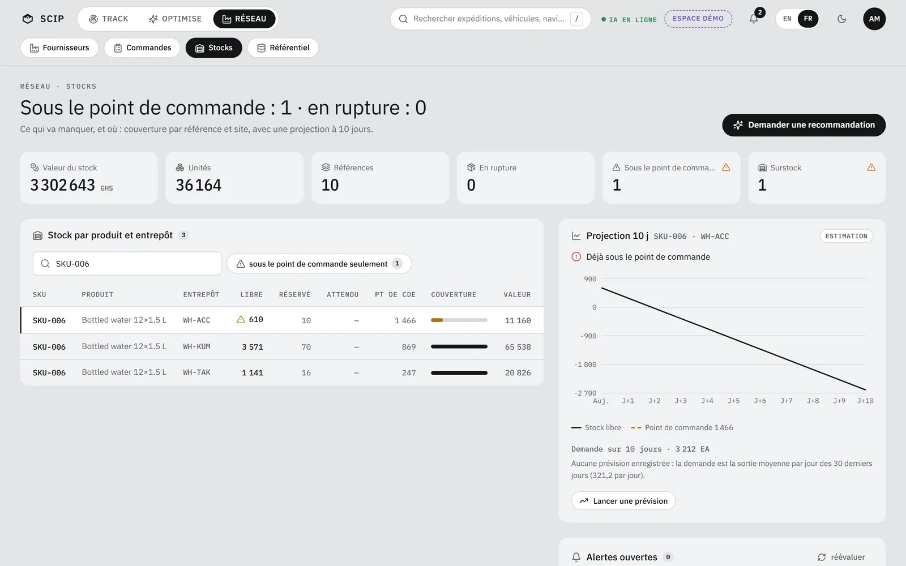

Stocks
La rupture, vue avant.
Ce qui va manquer, et où : la couverture par référence et par site, avec une « Projection 10 j » et le bouton « Demander une recommandation ».
Dans la démo : SKU‑006, 610 unités à WH‑ACC pour un point de commande de 1 466. Valeur du stock : 3 302 643 GHS sur 10 références.